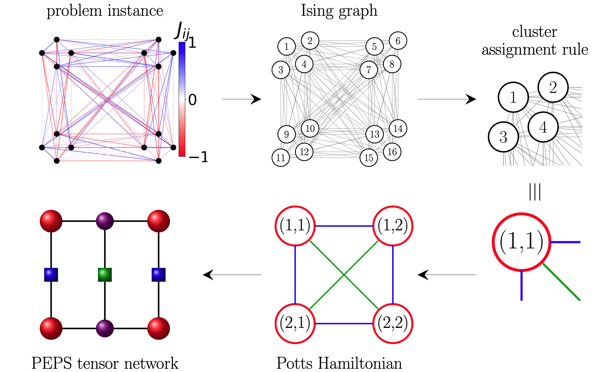
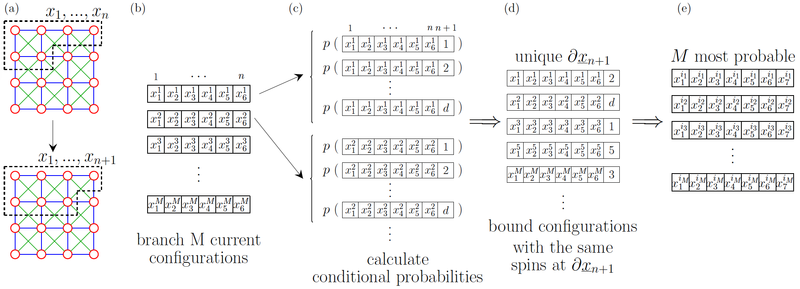

Brief description of the algorithm
SpinGlassPEPS.jl is a package developed for finding low-energy configurations in Ising type optimization problems [1, 2]. By leveraging Projected Entangled Pair States (PEPS) tensor networks, the algorithm efficiently represents the Boltzmann distribution [5], enabling heuristic exploration of quasi-2D problem spaces. In particular, this approach is tailored to tackle the challenges posed by graph geometries relevant to modern quantum annealing devices, such as the Pegasus and Zephyr graphs employed by D-Wave systems.
This section builds upon the broader methodology outlined in the analysis of tensor-network limitations in solving large-scale Ising problems on Pegasus and Zephyr geometries [1].
Problem representation
Let us consider a classical Ising Hamiltonian
\[H(\underline{s}_N) = \sum_{\langle i, j\rangle \in \mathcal{E}} J_{ij} s_i s_j + \sum_{i =1}^N J_{ii} s_i\]
where $\underline{s}_N$ denotes a particular configuration of $N$ binary variables $s_i=\pm 1$. More generally, we mark sub-configurations of the first $k$ variables as $\underline{s}_k = (s_1, s_2, \ldots, s_k)$. Non-zero couplings $J_{ij} \in \mathbb{R}$ are input parameters of a given problem instance and form a connectivity graph $\mathcal{E}$.
Graphs with large unit cells
We focus on the systems with quasi-2D interaction graphs, in particular those of the relevance to present-day quantum annealers, such as Pegasus and Zephyr. In the picture below, we mark group of spins which naturally form unit cells with red shapes.
More information on lattice geometries you can find in section Lattice Geometries.
In order to adress graph geometries with large unit cells using tensor networks, we represent the problem as a Potts Hamiltonian. To that end we group together sets of binary variables into clusters with a reduced number of variables of larger dimensions. In this framework Ising problem translates to:
\[H(\underline{x}_{\bar{N}}) = \sum_{\langle m,n\rangle \in \mathcal{F}} E_{x_m x_n} + \sum_{n=1}^{\bar{N}} E_{x_n}\]
where $\mathcal{F}$ forms a 2D graph, in which we indicate nearest-neighbour interactions with blue lines, and diagonal connections with green lines in the picture above. In this example, $x_n$ takes $d$ values with $d=2^4$ for square diagonal, $d=2^{24}$ for Pegasus and $2^{16}$ for Zephyr geometry (in the maximal case when all qubits are operational). $E_{x_n}$ is an intra-node energy of the corresponding binary-variables configuration, and $E_{x_n x_m}$ is inter-node energy.
Calculating conditional probabilities
We assume that finding low energy states is equivalent to finding most probable states. We represent the probability distribution as a PEPS tensor network.
\[ p(\underline{x}_{\bar{N}}) = \frac{1}{Z} \exp{(-\beta H(\underline{x}_{\bar{N}}))}\]
where $Z$ is a partition function and $\beta$ is inverse temperature. Once the PEPS tensor network is constructed, the probability distribution can be obtained by approximately contracting the tensor network, which is described in more details in subsection Tensor network contractions for optimization problems. Subsequently, we select only the configurations with the highest marginal probabilities
\[ p(\underline{x}_{n+1}) = p(x_{n+1} | \underline{x}_{n}) \times p(\underline{x}_{n})\]
Branch and bound search
By employing branch and bound search strategy iteratively row after row, we address the solution of Hamiltonian in the terms of conditional probabilities. This approach enables the identification of most probable (low-energy) spin configurations within the problem space.
Tensor network contractions for optimization problems
Branch and bound search relies on the calculation of conditional probabilities. To that end, we use tensor network techniques. Conditional probabilities are obtained by contracting a PEPS tensor network, which, although an NP-hard problem, can be computed approximately. The approach utilized in SpinGlassPEPS.jl is boundary matrix product state (MPS) illustrated in the figure below. Tensors in the pink box are approximated by matrix product state with truncated bond dimension. In each step, a product of boundary MPS from the previous row and the matrix product operator (MPO) formed by the next row of tensors, is approximated by a new boundary MPS of limited bond dimension.
In SpinGlassPEPS.jl one can use two types of approximating boundary MPS. More information you can find in the section Search parameters.
References & Related works
"Limitations of tensor network approaches for optimization and sampling: A comparison against quantum and classical Ising machines" A.M. Dziubyna, T. Śmierzchalski, B. Gardas, M.M. Rams, M. Mohseni arXiv:2411.16431
"SpinGlassPEPS.jl: low-energy solutions for near-term quantum annealers" T. Śmierzchalski, A.M. Dziubyna, K. Jałowiecki, Z. Mzaouali, Ł. Pawela, B. Gardas, M.M. Rams []
"Approximate optimization, sampling, and spin-glass droplet discovery with tensor networks" Marek M. Rams, Masoud Mohseni, Daniel Eppens, Konrad Jałowiecki, Bartłomiej Gardas Phys. Rev. E 104, 025308 (2021) or arXiv version arXiv:1811.06518
"Two-Dimensional Tensor Product Variational Formulation" T. Nishino, Y. Hieida, K. Okunishi, N. Maeshima, Y. Akutsu, A. Gendiar, Progr. Theor. Phys. 105, 409 (2001)